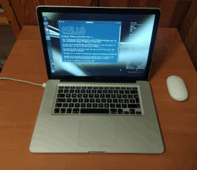

I'v bought a "MacBook Pro 5.1 15 inches" in early 2009. I've used it for several years, till when it started to be a bit laggish, so I've put it back in its box on a shelf and moved to a Window laptop (me bad ...).
Frustrated by the bad road taken by Windows 11 I decided it was time to go back to Linux, that I've used in the late '90 when I had my degree studies. What would be better than a MacBook Pro to install Linux on it ? Nothing! :) So, I take it back on the desk, and did some refurbish:
I decided not to upgrade the RAM, I decided 4GB would be more than enough for me. So, after 17 years my MacBook Pro is still alive and perfectly running. I'm proud of it.
For the motherboard removal the and thermal paste replacement I've followed with good results the following resources:
It was my first experience is such a complex refurbish activity, it tooks me about 2 hours for the complete procedure.
After the thermal paste replacement, the MacBook Pro runs at about 45'C on CPU during standard activity (about 70'C if watching video on YouTube)
Still under construction ...
Whatever is reported in this webpage is shared under "The Unlicense" license
Last update: April 2nd, 2026